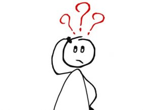

Geef het voordeel van de twijfel
Soms gaat je vriend of vriendin op stap met vrienden terwijl die jou niet uitnodigt. Dit betekent niet automatisch dat hij of zij dit expres doet of er slechte bedoelingen mee heeft. Kijk kritisch naar jezelf en vraag jezelf af of jou ook niet soms dingen ontglippen: we zijn lang niet allemaal engeltjes. Geef je vriend(in) het voordeel van de twijfel!
